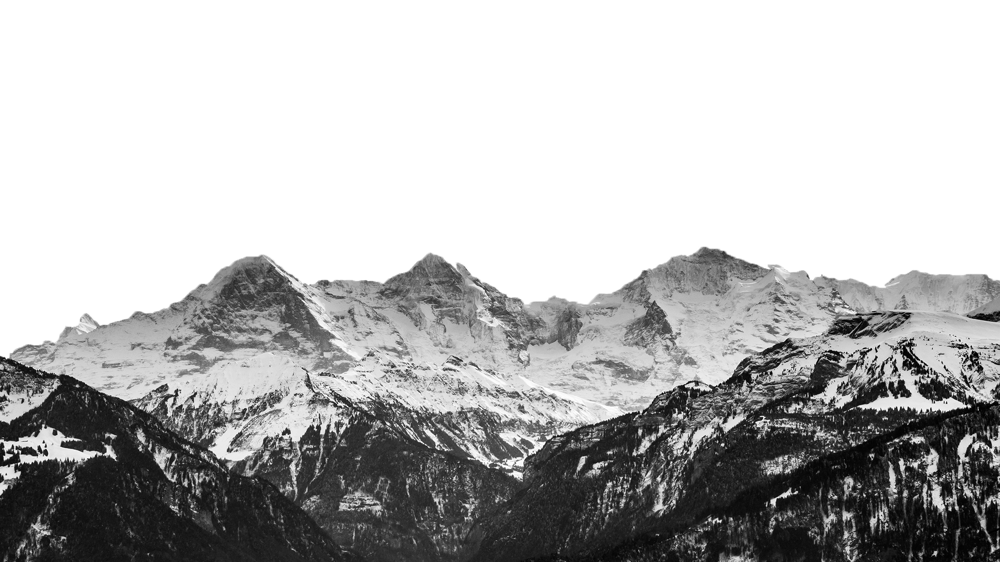
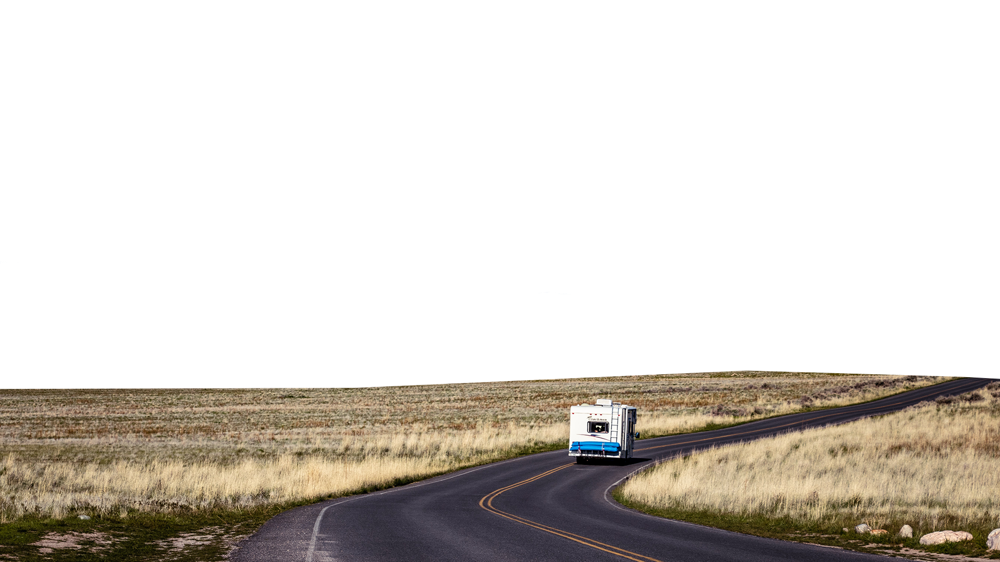
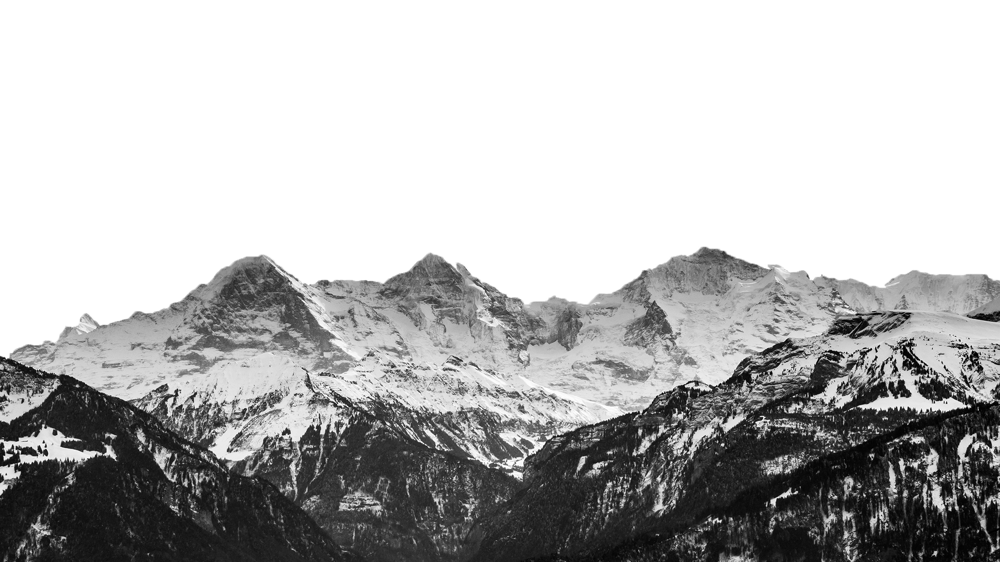
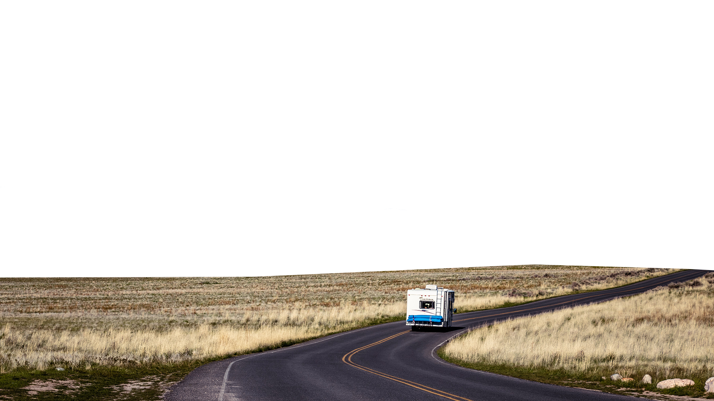
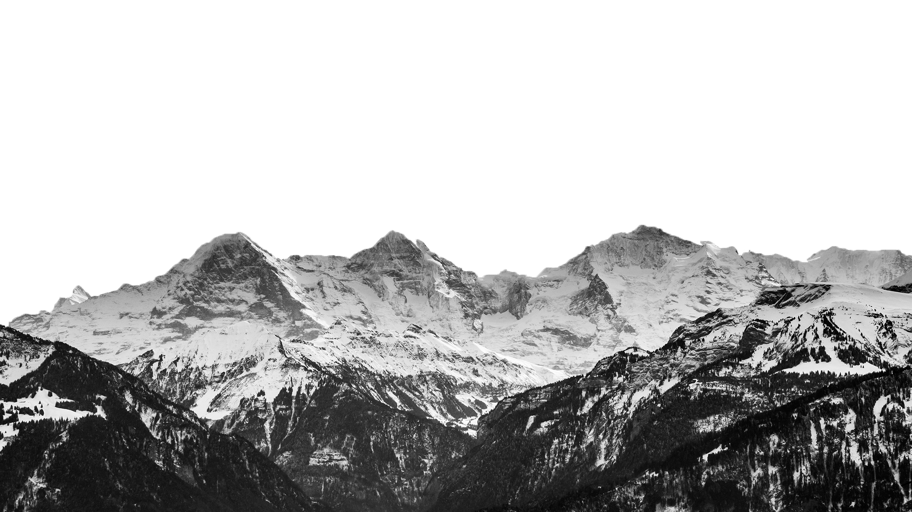
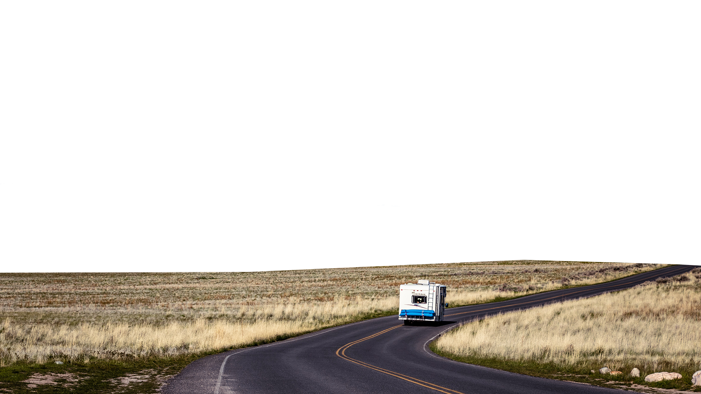
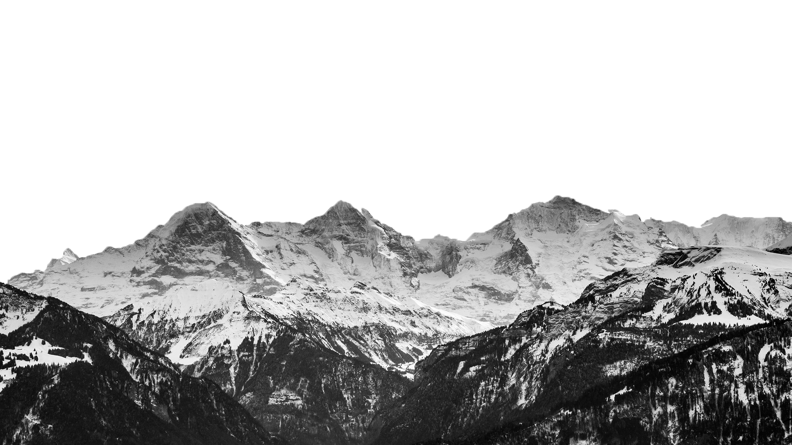
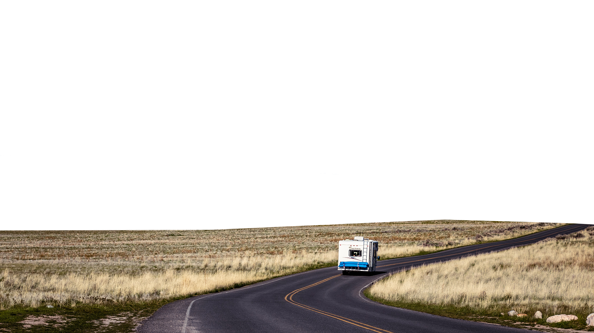

The northern lights, or the aurora borealis, are beautiful dancing waves of light that have captivated people for millennia. But for all its beauty, this spectacular light show is a rather violent event.
Energized particles from the sun slam into Earth's upper atmosphere at speeds of up to 45 million mph (72 million kph), but our planet's magnetic field protects us from the onslaught.
As Earth's magnetic field redirects the particles toward the poles — there are southern lights, too, which you can read about below — the dramatic process transforms into a cinematic atmospheric phenomenon that dazzles and fascinates scientists and skywatchers alike.
On Earth, the northern lights' counterpart in the Southern Hemisphere is the southern lights — they are physically the same and differ only in their location. As such, scientists expect them to occur simultaneously during a solar storm, but sometimes the onset of one lags behind the other.
The lights we see in the night sky are in actual fact caused by activity on the surface of the Sun. Solar storms on our star's surface give out huge clouds of electrically charged particles. These particles can travel millions of miles, and some may eventually collide with the Earth. Most of these particles are deflected away, but some become captured in the Earth’s magnetic field, accelerating down towards the north and south poles into the atmosphere. This is why aurora activity is concentrated at the magnetic poles. “These particles then slam into atoms and molecules in the Earth’s atmosphere and essentially heat them up,” explains Royal Observatory astronomer Tom Kerss. “We call this physical process ‘excitation’, but it’s very much like heating a gas and making it glow.” What we are seeing therefore are atoms and molecules in our atmosphere colliding with particles from the Sun. The aurora's characteristic wavy patterns and 'curtains' of light are caused by the lines of force in the Earth’s magnetic field.